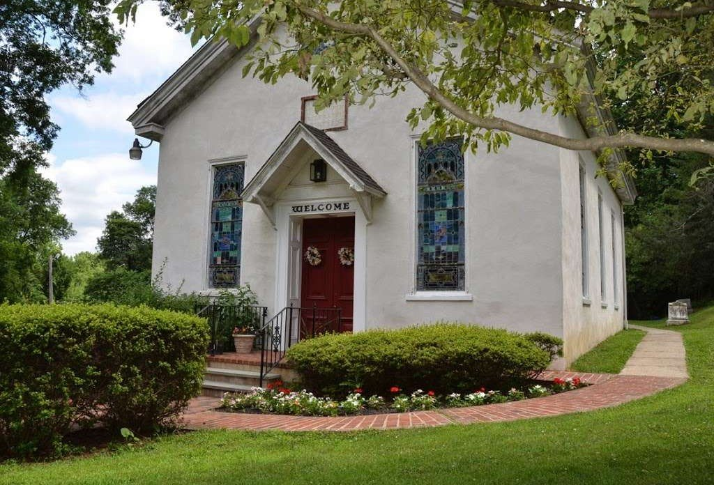

[Announcement title]
[One or two sentences with the details people need to know.]
Posted [DATE]
Glen Mills, Pennsylvania
We gather every Sunday at 10:30 a.m., all year round, to worship, open the Scriptures and share life together. Come as you are. There's always room for one more.
Your first visit
Stonybank is a small, friendly congregation. You won't get lost in the crowd, and nobody will put you on the spot. Arrive a few minutes early, grab a seat anywhere, and someone will be glad to say hello.
Worship begins at 10:30 with singing, prayer and a sermon from an open Bible.
Child care is offered at every service, and families are always welcome to worship together.
We share the Lord's Supper together on the first Sunday of each month.
Believer's baptism on request, plus discipleship classes for anyone exploring membership.
Gatherings
Every Sunday at 10:30 a.m., every season of the year.
9:30 a.m. before worship. Led by a seasoned teacher from our congregation, usually working through a book of the Bible, with plenty of room for discussion.
7:00–8:00 p.m. An in-depth look at biblical principles for everyday faith, followed by shared requests, thanksgiving and prayer.
Missionary dinners, fellowship meals and volunteer workdays through the year. There's always enough for one more.
What's happening
[One or two sentences with the details people need to know.]
Posted [DATE][One or two sentences with the details people need to know.]
Posted [DATE][One or two sentences with the details people need to know.]
Posted [DATE][Short description of the event.]
[Short description of the event.]
[Short description of the event.]


Our pastor
Pastor Jim and Diana are eager to welcome you to worship with them at Stonybank. [A SHORT BIO: what Jim loves to preach and what they love about Stonybank.]
Listen
Bible teaching from Pastor Jim, straight from our podcast. Play it here, or follow along in your favorite app.
Give
Your generosity keeps the doors open, supports missionaries, and serves our neighbors. Give securely online, or drop your gift in the offering on Sunday.
Find us